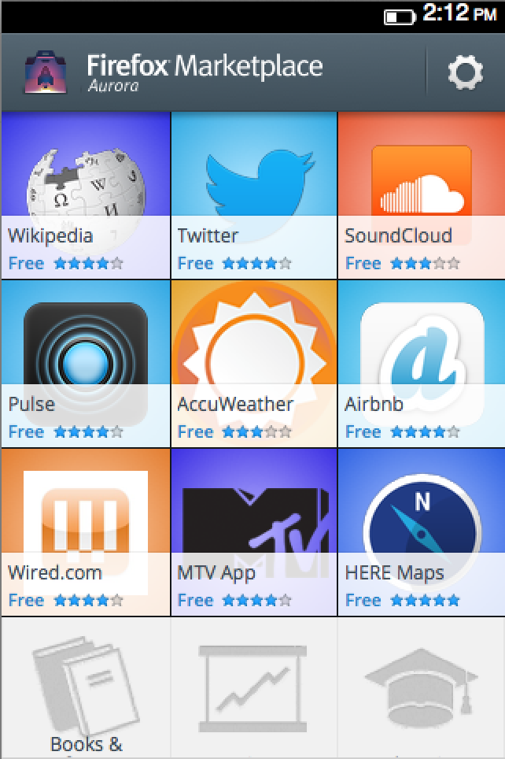
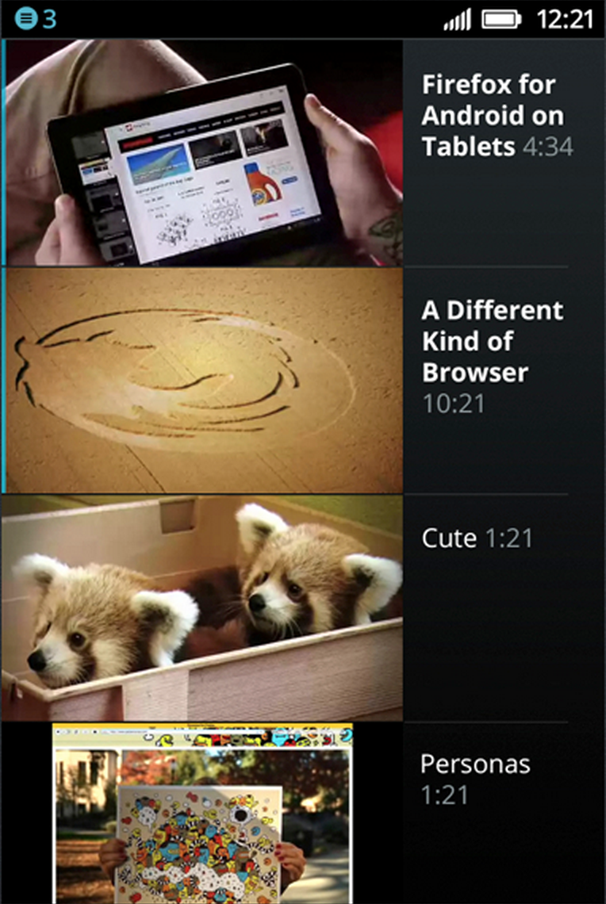
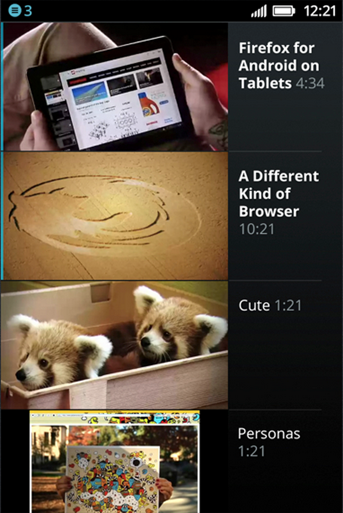

Firefox OS - User experience & design guidelines
User experience & design guidelines
- Websites vs WebApps
- FFOS Design guidelines
- Getting started
Olav Nymoen, Comoyo
The user experience of WebApps


The user experience of WebApps
The user experience of webapps
Gracefully handle connectivity
Left and right layered drawers
Productivity apps vs media apps
 

Tons of pre made building blocks

- Examples
- developer.mozilla.org/en-US/docs/Mozilla/Firefox_OS/UX
- buildingfirefoxos.com
- Code
- github.com/mozilla-b2g/gaia/tree/master/shared
- github.com/comoyo/gaia-shared
- Styleguide
- mozilla.org/en-US/styleguide
- WebAPIs brings the App experience to the web
- Live up to expectations by following guidelines and best practices
- If you're prototyping apps in HTML and css, you're already making WebApps